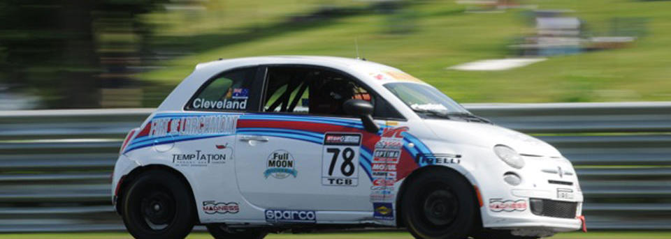

Owner-operated.
Seven locations. One welcome.
Randy Russell built Full Moon Oyster Bar one North Carolina town at a time. Same menu, same hospitality, same Southern table.

A Southern oyster bar, multiplied.
Full Moon Oyster Bar is dedicated to serving delicious seafood in a relaxed and comfortable environment. That single sentence sits on every location page on the original site, and it still describes the room when you walk in.
Seven North Carolina locations have grown from that same idea: a vibrant seafood destination with a fun atmosphere, fresh oysters, weekly specials, and a Southern welcome that doesn't depend on who you are or where you came from.
The Atlantic Beach location at 505 Atlantic Beach Causeway anchors the brand on the coast. The other six spread inland through the Triad, the Sandhills, Charlotte, and the Triangle, every one of them serving the same menu, the same way.
Come as a stranger, leave as a friend.
Six pillars, one table.
The tagline does work
"Come as a Stranger, Leave as a Friend." Seven words that carry the brand thesis. We mean them.
Real coastal connection
Most oyster bars are landlocked. Our Atlantic Beach room sits right on the Causeway. The coast is real here.
Seven days, seven specials
Oyster Monday through Sunday Funday. A named reason to come back every night of the week.
One menu, every location
Moon Rockers, Crab Stuffed Oysters, Crawfish & Alligator Cheesecake. The same recipes from the Triad to the beach.
Owner-operated
Randy Russell runs the chain. Seven locations without the franchise feel.
Independently recognized
Restaurant Guru recommendation on the books. Real third-party credibility, not self-issued.
A Restaurant Guru recommendation.
We are pleased to inform that Full Moon Oyster Bar — Clemmons has been awarded a Recommendation badge by Restaurant Guru, one of the world's most popular foodie websites with over 30 million monthly users.